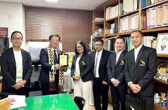
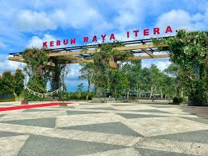

ITERA Jalin Kerja Sama Internasional
MoA dengan Kangwon National University
Pada tahun 2024, ITERA menandatangani Memorandum of Agreement (MoA) dengan Kangwon National University, Korea Selatan. Kerja sama ini mencakup bidang pendidikan, penelitian, dan pengabdian kepada masyarakat.
Kolaborasi dengan BRIN dan Industri
ITERA juga menjalin kemitraan strategis dengan PT Bhakti Terang Indonesia dan Badan Riset dan Inovasi Nasional (BRIN) untuk memperkuat riset dan inovasi teknologi.

Kebun Raya ITERA: Konservasi Tumbuhan Sumatera
Peresmian Kebun Raya
Pada 8 Juni 2022, ITERA meresmikan Kebun Raya ITERA seluas 75,5 hektare, menjadikannya kampus pertama di Sumatera yang memiliki kebun raya di bawah naungan perguruan tinggi.
Fungsi dan Jaringan Konservasi
Kebun raya ini menjadi pusat pendidikan, penelitian, wisata, serta pelestarian lingkungan. ITERA juga tergabung dalam jaringan konservasi tumbuhan dunia melalui Botanic Gardens Conservation International (BGCI).
